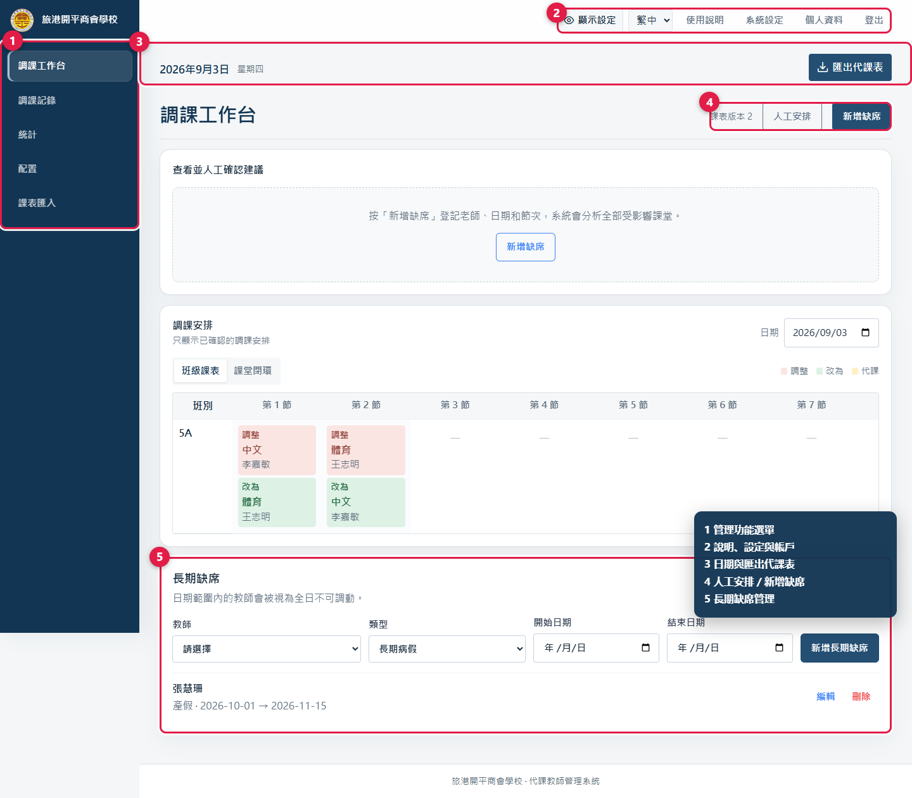
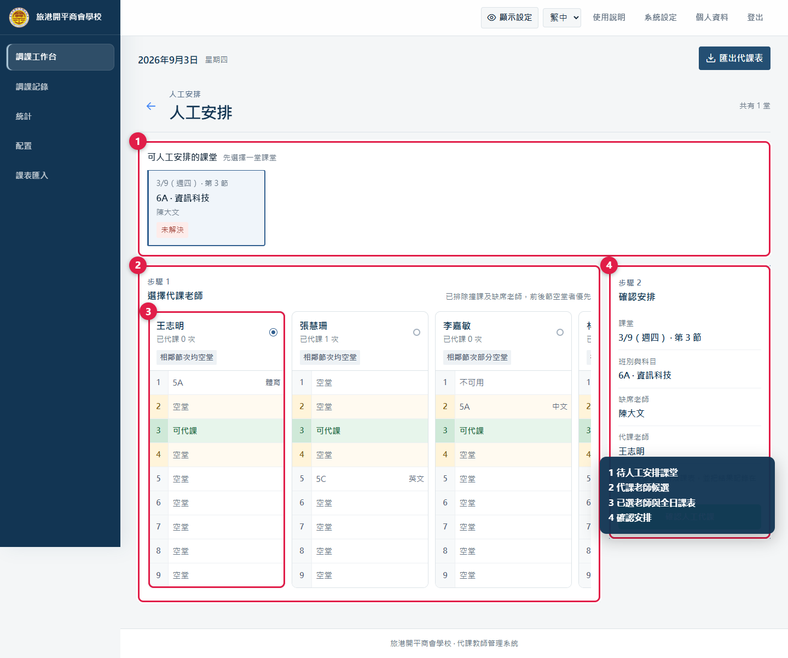
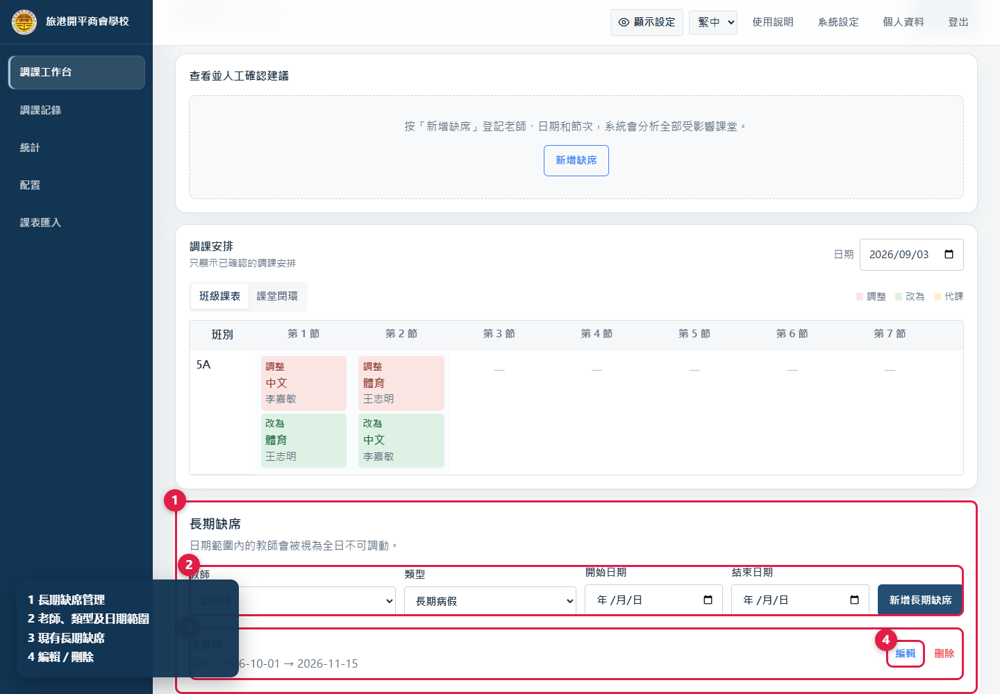
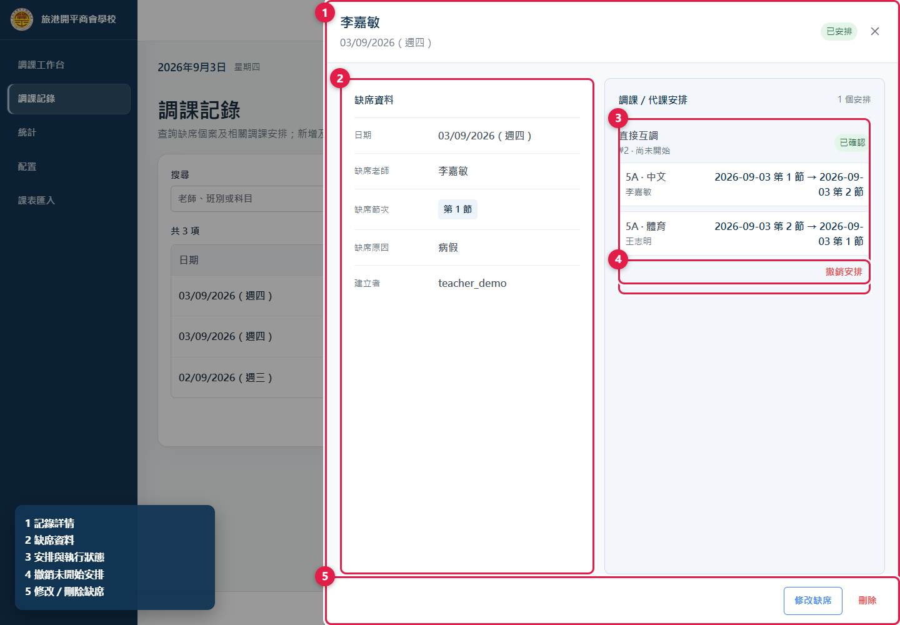
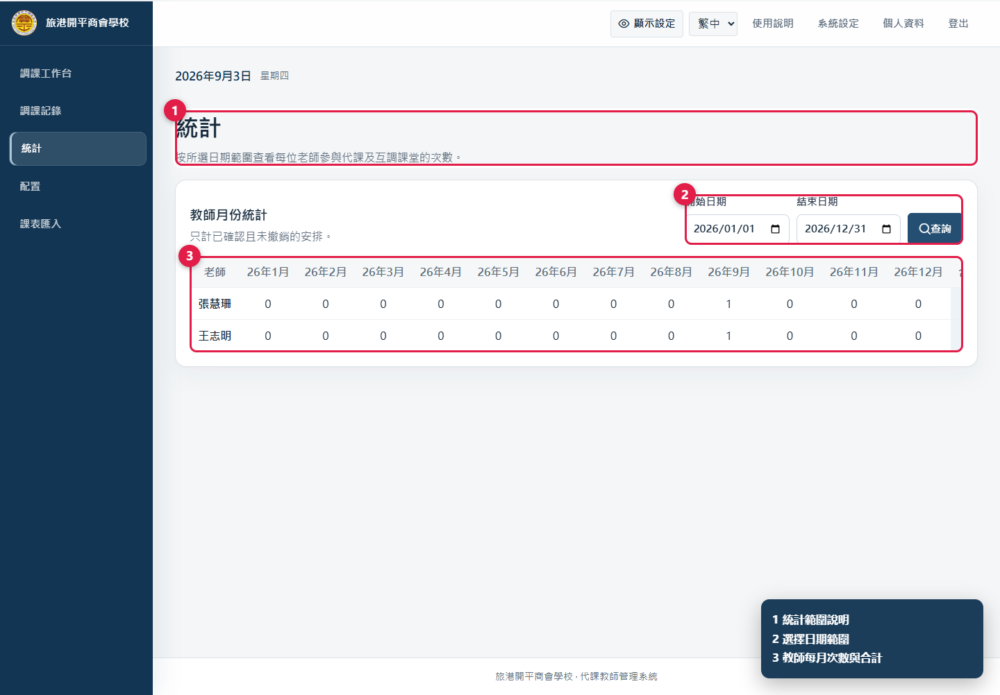
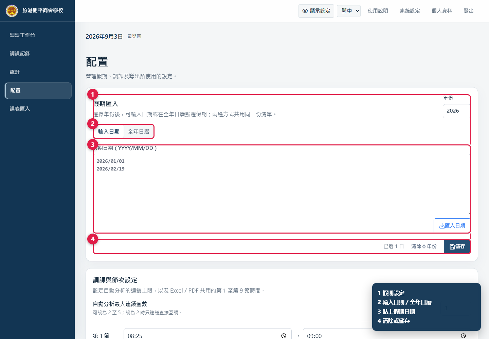
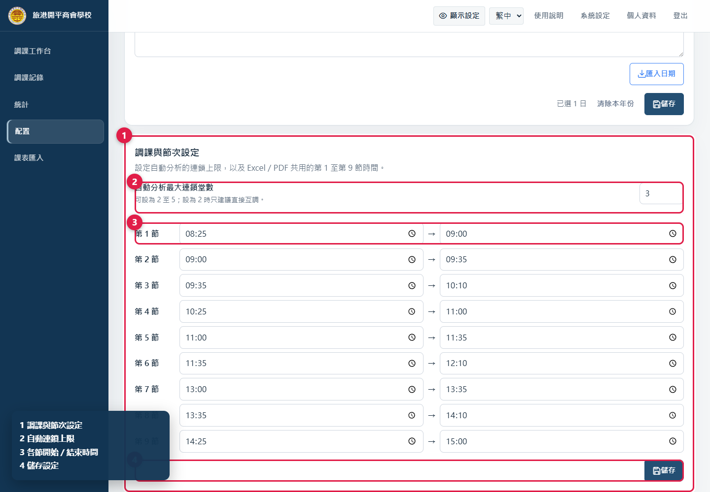
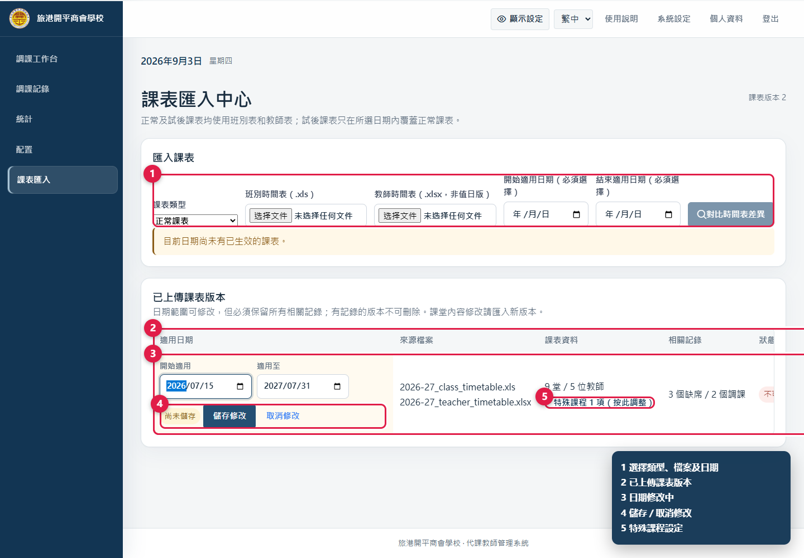
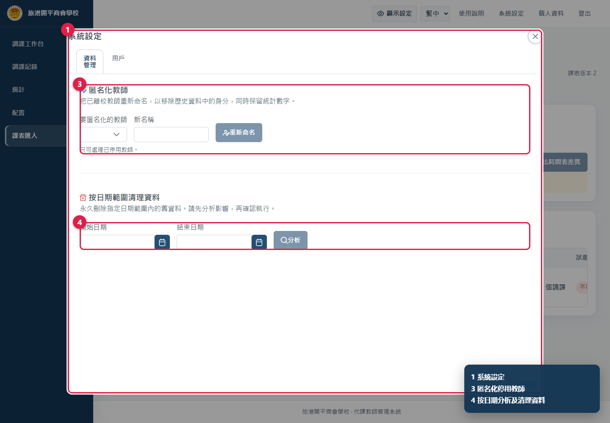
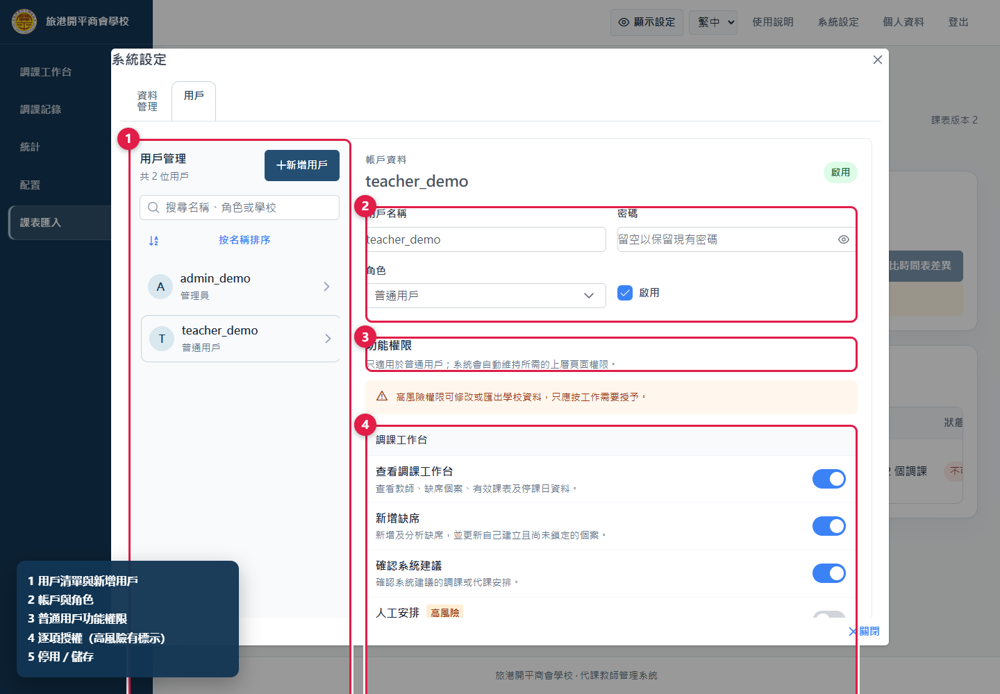

適用對象：學校管理員及超級管理員
更新日期：2026 年 9 月 1 日
圖中的紅框及圓形數字是操作位置，角落圖例說明各標註用途。所有畫面均使用示例資料。
管理員具備普通用戶全部功能，另可人工安排、管理長期缺席和記錄、查看統計、匯出每日表、配置假期及節次、管理課表版本、用戶和資料。
本手冊以學校管理員為主。學校管理員只管理所屬學校，可建立普通用戶或管理員；跨校管理、建立超級管理員及永久刪除用戶只供超級管理員處理。
修改課表、撤銷安排、刪除、匿名化和永久清理都會影響全校或歷史資料。執行前必須核對對象、日期、節次、依賴和影響數量。
管理員和普通用戶使用同一登入頁。選擇語言、輸入用戶名稱和密碼後按「登入」。
圖 1 管理員與普通用戶共用登入頁。

圖 2 完整管理選單、每日匯出、人工安排、長期缺席及系統設定入口。
普通用戶的新增缺席、核對建議、確認安排、搜尋記錄及更改密碼，請參閱用戶使用說明書。
人工安排同時列出未解決課堂，以及使用者主動放棄系統候選而轉入的課堂。

圖 3 先選課堂，再比較候選老師的全日課表，最後確認。
系統已排除該節撞課及缺席老師，但候選排序只供參考。如原課堂仍有共同教師，畫面可能提供由共同教師繼續上課的選項，確認前應按校內安排判斷。
若另一位使用者已修改課表，舊修訂的確認會被拒絕；重新開啟人工安排再選一次。

圖 4 新增、編輯或刪除長期缺席。
範圍內的教師會被視為全日不可調動，也不會成為代課候選。系統只需要類型和日期，不應輸入醫療詳情。編輯或刪除後，正在處理的建議應重新分析。

圖 5 詳情顯示缺席、安排、執行狀態，以及可用的撤銷、修改和刪除操作。
新增流程遇到同一老師同一天的既有缺席時，只追加新節次，不會改原因或移除舊節次；這類更正應在記錄詳情處理。
| 狀態 | 管理意義 |
|---|---|
| 尚未開始 | 所有相關課堂仍在未來，可在無下游依賴時撤銷 |
| 部分完成 | 部分課堂已開始／完成，不可當作全新安排任意重寫 |
| 已完成 | 相關上課時間已過，歷史記錄應保留 |
已確認安排只有在「尚未開始」而且沒有後續調動依賴時才可撤銷。若 A 的結果被 B 使用，必須先撤銷最新、尚未開始的 B，再返回撤銷 A。已開始或已完成的安排不能直接撤銷，避免把已發生的課堂從歷史中抹去。
有效課表是目前真實狀態。如已移動課堂的老師後來缺席，系統只修復受影響的局部鏈路，保留無關安排；處理後要再次核對課堂閉環和當日班級課表。

圖 6 設定日期範圍，查看每位老師的每月次數和合計。
統計頁只顯示統計；匯出入口已移到工作台上方。
附註會使用自然語句描述代課、互調，以及原任老師改到的新時間。下載前先確認當日沒有未解決課堂，並核對節次時間。
系統會按所選日期生效的課表自動決定版面：普通課表使用第 1 至第 9 節；試後課表只顯示第 1 至第 5 節，時間依次為 08:25–09:15、09:15–10:05、10:25–11:15、11:15–12:05、12:25–13:00。Excel、PDF、缺席節次及課表核對畫面會使用同一套節次。

圖 7 可貼上日期或在全年日曆點選，最後都要儲存。
YYYY/MM/DD；或切換「全年日曆」直接點選。「匯入日期」只把文字加入待儲存清單，仍要按「儲存」。使用「清除本年份」後再儲存會移除該年全部假期，操作前須再次核對。

圖 8 設定自動分析上限及第 1 至第 9 節時間。

圖 9 上傳兩份課表、設定適用日期，並管理已上傳版本。
.xls 和教師時間表
.xlsx（非值日版）。試後課表只在選定日期內覆蓋正常課表。啟用後要抽查數個班別和老師，並確認工作台、缺席節次和匯出表都只顯示第 1 至第 5 節。

圖 10 資料分頁包含匿名化停用教師及按日期範圍清理。
匿名化保留統計數字，但移除歷史畫面的原姓名。系統不會保存姓名對照；如校內程序要求留存，應在系統外安全處理。
永久清理不能在介面內復原，不可當作一般整理工具。

圖 11 左側管理用戶，右側編輯帳戶、角色和逐項權限。
離任人員應停用帳戶，保留歷史操作記錄；不要改名後轉交他人或建立多人共用帳戶。
開啟新增缺席、確認建議、人工安排或每日下載時，系統會同時開啟「查看調課工作台」；開啟記錄管理時會同時開啟「查看調課記錄」。關閉上層權限會一併關閉依賴功能。
管理員和超級管理員永遠擁有全部權限，個別開關不適用。後端權限會在下一次請求即時生效；用戶重新載入後，導覽和按鈕亦會同步。
先確認缺席已建立、所選節次有課，並已分析。已有候選但不採用時，要由該卡片轉入人工安排。
查看執行狀態及依賴。已開始／完成不能撤銷；有下游依賴時，先撤銷最新且尚未開始的依賴安排。
版本正在使用或已有缺席／調課記錄。匯入新版本並保留舊版本，以維持歷史一致性。
確認兩份檔案和開始／結束日期均已提供，且檔案格式為班別
.xls、教師 .xlsx。
在「系統設定」→「用戶」檢查啟用狀態、角色及逐項權限。權限改動後請用戶重新載入。
核對匯出日期、已確認安排和「配置」中的節次時間，再重新下載。
提供發生時間、登入角色、缺席日期／節次、老師、班別、科目、課表檔名、適用日期和完整錯誤訊息。可附不含密碼及敏感資料的截圖；不要傳送密碼。